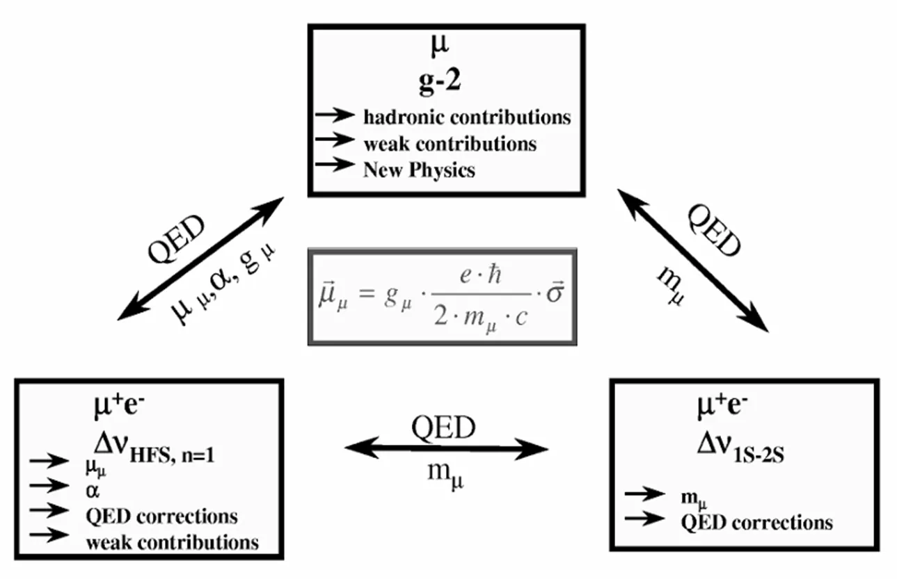
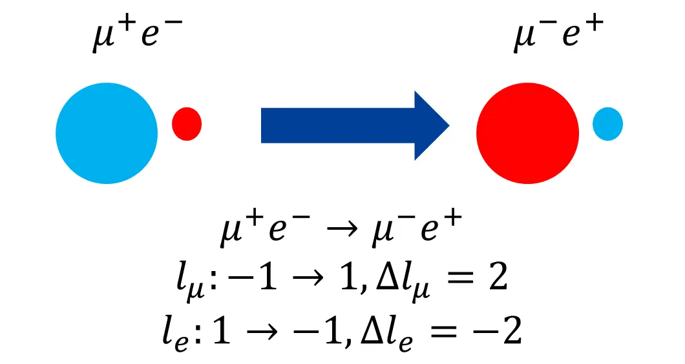
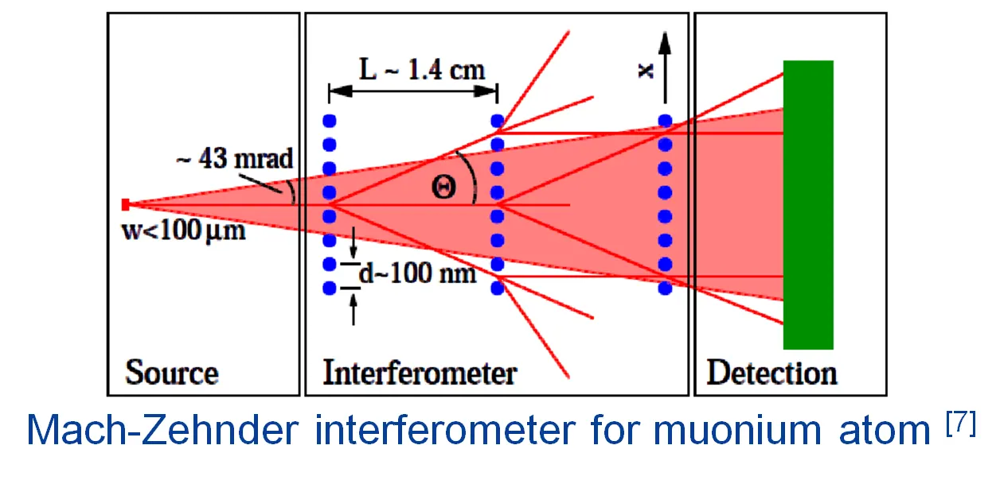

06/07About Muons缪子科普
Muonium缪子素
What is a Muonium (μ+ e–)?
- Bound state of positive muon μ + and electron e –
- The lightest hydrogen-like atom
- Lifetime: limited by 2.2 μs (lifetime of muon) [2]
- Two leptons system with two different particle generations ( μ + e – )
- Suitable for QED precision measurements
- Produced by injecting μ + into silica aerogel [3]


Why study Muonium?
Precision test of quantum electrodynamics theory [2]
- Ground state hyperfine splitting Δ𝜈HFS : muon mass mμ (Δ𝜈HFS ∝ 1/mμ )
- Ground state hyperfine splitting Δ𝜈HFS : fine structure constant α
- Muonium 1S-2S transition spectroscopy [4] : me/mμ


Tests of CPT symmetry [5]
- 1S-2S transition spectroscopy of muonium and antimuonium
Discovering new physics beyond the Standard Model (BSM) [6]
- Lepton-flavor-violating (muonium-to-antimuonium conversion)
Muonium-to-Antimuonium ConversionExperiment (MACE) [6]
- A charged lepton flavour violation phenomena
- This conversion is forbidden in SM
- Current limit: (MACS experiment at PSI in 1999): P ≲ 8.3 × 10-11 (90% C.L.)
- MACE seeks to detect or place limits on this rare process with a conversion probability exceeding 10-13


Testing Antimatter Gravity with Muonium [7]
- Measuring muonium’s gravitational interaction with ordinary matter
- Two different approaches for a muonium gravity experiment are being considered:
- Search for an annual modulation of the muonium (1S-2S) transition frequency
- Use a high quality muonium beam passing through a Mach-Zehnder atom interferometer


References
- Hughes, V. W., McColm, D. W., Ziock, K., & Prepost, R., Phys. Rev. Lett., 5(2) (1960)
- Willmann, L., & Jungmann, K., SciPost Phys. Proc (2021)
- Otani, M., Muon cooling and acceleration, AAPPS Bull, 32, 6 (2022)
- Laporta, S., & Remiddi, E., Quantum Electrodynamics and its Precision Tests, Encyclopedia of Mathematical Physics, 1 (2006)
- Gomes, A. H., Kostelecký, V. A., & Vargas, A. J., Phys. Rev., 90(7) (2014)
- Bai, A. Y. et al., Conceptual Design of the Muonium-to-Antimuonium Conversion Experiment (MACE) (2024)
- Kirch, K., & Khaw, K. S., Testing antimatter gravity with muonium, International Journal of Modern Physics: Conference Series, 30 (2014)